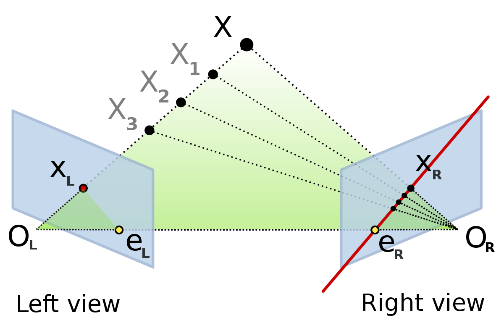

kornia.geometry.epipolar¶
Module with useful functionalities for epipolar geometry used by Structure from Motion
Essential¶
- kornia.geometry.epipolar.find_essential(points1, points2, weights=None)¶
Find essential matrices.
- Parameters:
points1 (
Tensor) – A set of points in the first image with a tensor shape \((B, N, 2), N>=5\).points2 (
Tensor) – A set of points in the second image with a tensor shape \((B, N, 2), N>=5\).weights (
Optional[Tensor], optional) – Tensor containing the weights per point correspondence with a shape of \((5, N)\). Default:None
- Return type:
- Returns:
the computed essential matrices with shape \((B, 10, 3, 3)\). Note that all possible solutions are returned, i.e., 10 essential matrices for each image pair. To choose the best one out of 10, try to check the one with the lowest Sampson distance.
- kornia.geometry.epipolar.essential_from_fundamental(F_mat, K1, K2)¶
Get Essential matrix from Fundamental and Camera matrices.
Uses the method from Hartley/Zisserman 9.6 pag 257 (formula 9.12).
- Parameters:
- Return type:
- Returns:
The essential matrix with shape \((*, 3, 3)\).
- kornia.geometry.epipolar.essential_from_Rt(R1, t1, R2, t2)¶
Get the Essential matrix from Camera motion (Rs and ts).
Reference: Hartley/Zisserman 9.6 pag 257 (formula 9.12)
- Parameters:
- Return type:
- Returns:
The Essential matrix with the shape \((*, 3, 3)\).
- kornia.geometry.epipolar.decompose_essential_matrix(E_mat)¶
Decompose an essential matrix to possible rotations and translation.
This function decomposes the essential matrix E using svd decomposition [96] and give the possible solutions: \(R1, R2, t\).
- Parameters:
E_mat (
Tensor) – The essential matrix in the form of \((*, 3, 3)\).- Return type:
- Returns:
A tuple containing the first and second possible rotation matrices and the translation vector. The shape of the tensors with be same input \([(*, 3, 3), (*, 3, 3), (*, 3, 1)]\).
- kornia.geometry.epipolar.motion_from_essential(E_mat)¶
Get Motion (R’s and t’s ) from Essential matrix.
Computes and return four possible poses exist for the decomposition of the Essential matrix. The possible solutions are \([R1,t], [R1,-t], [R2,t], [R2,-t]\).
- kornia.geometry.epipolar.motion_from_essential_choose_solution(E_mat, K1, K2, x1, x2, mask=None)¶
Recover the relative camera rotation and the translation from an estimated essential matrix.
The method checks the corresponding points in two images and also returns the triangulated 3d points. Internally uses
decompose_essential_matrix()and then chooses the best solution based on the combination that gives more 3d points in front of the camera plane fromtriangulate_points().- Parameters:
E_mat (
Tensor) – The essential matrix in the form of \((*, 3, 3)\).K1 (
Tensor) – The camera matrix from first camera with shape \((*, 3, 3)\).K2 (
Tensor) – The camera matrix from second camera with shape \((*, 3, 3)\).x1 (
Tensor) – The set of points seen from the first camera frame in the camera plane coordinates with shape \((*, N, 2)\).x2 (
Tensor) – The set of points seen from the first camera frame in the camera plane coordinates with shape \((*, N, 2)\).mask (
Optional[Tensor], optional) – A boolean mask which can be used to exclude some points from choosing the best solution. This is useful for using this function with sets of points of different cardinality (for instance after filtering with RANSAC) while keeping batch semantics. Mask is of shape \((*, N)\). Default:None
- Return type:
- Returns:
The rotation and translation plus the 3d triangulated points. The tuple is as following \([(*, 3, 3), (*, 3, 1), (*, N, 3)]\).
- kornia.geometry.epipolar.relative_camera_motion(R1, t1, R2, t2)¶
Compute the relative camera motion between two cameras.
Given the motion parameters of two cameras, computes the motion parameters of the second one assuming the first one to be at the origin. If \(T1\) and \(T2\) are the camera motions, the computed relative motion is \(T = T_{2}T^{-1}_{1}\).
- Parameters:
- Return type:
- Returns:
A tuple with the relative rotation matrix and translation vector with the shape of \([(*, 3, 3), (*, 3, 1)]\).
Fundamental¶
- kornia.geometry.epipolar.find_fundamental(points1, points2, weights=None, method='8POINT')¶
Find the fundamental matrix.
- Parameters:
points1 (
Tensor) – A set of points in the first image with a tensor shape \((B, N, 2), N>=8\).points2 (
Tensor) – A set of points in the second image with a tensor shape \((B, N, 2), N>=8\).weights (
Optional[Tensor], optional) – Tensor containing the weights per point correspondence with a shape of \((B, N)\). Default:Nonemethod (
Literal['8POINT','7POINT'], optional) – The method to use for computing the fundamental matrix. Supported methods are “7POINT” and “8POINT”. Default:"8POINT"
- Return type:
- Returns:
the computed fundamental matrix with shape \((B, 3*m, 3)\), where m number of fundamental matrix.
- Raises:
ValueError – If an invalid method is provided.
- kornia.geometry.epipolar.fundamental_from_essential(E_mat, K1, K2)¶
Get the Fundamental matrix from Essential and camera matrices.
Uses the method from Hartley/Zisserman 9.6 pag 257 (formula 9.12).
- Parameters:
- Return type:
- Returns:
The fundamental matrix with shape \((*, 3, 3)\).
- kornia.geometry.epipolar.fundamental_from_projections(P1, P2)¶
Get the Fundamental matrix from Projection matrices.
- kornia.geometry.epipolar.compute_correspond_epilines(points, F_mat)¶
Compute the corresponding epipolar line for a given set of points.
- Parameters:
- Return type:
- Returns:
a tensor with shape \((*, N, 3)\) containing a vector of the epipolar lines corresponding to the points to the other image. Each line is described as \(ax + by + c = 0\) and encoding the vectors as \((a, b, c)\).
- kornia.geometry.epipolar.normalize_points(points, eps=1e-8)¶
Normalize points (isotropic).
Computes the transformation matrix such that the two principal moments of the set of points are equal to unity, forming an approximately symmetric circular cloud of points of radius 1 about the origin. Reference: Hartley/Zisserman 4.4.4 pag.107
This operation is an essential step before applying the DLT algorithm in order to consider the result as optimal.
- Parameters:
- Return type:
- Returns:
tuple containing the normalized points in the shape \((B, N, 2)\) and the transformation matrix in the shape \((B, 3, 3)\).
- kornia.geometry.epipolar.normalize_transformation(M, eps=1e-8)¶
Normalize a given transformation matrix.
The function trakes the transformation matrix and normalize so that the value in the last row and column is one.
- kornia.geometry.epipolar.get_perpendicular(lines, points)¶
Compute the perpendicular to a line, through the point.
- Parameters:
- Return type:
- Returns:
a tensor with shape \((*, N, 3)\) containing a vector of the epipolar perpendicular lines. Each line is described as \(ax + by + c = 0\) and encoding the vectors as \((a, b, c)\).
- kornia.geometry.epipolar.get_closest_point_on_epipolar_line(pts1, pts2, Fm)¶
Return closest point on the epipolar line to the correspondence, given the fundamental matrix.
- Parameters:
pts1 (
Tensor) – correspondences from the left images with shape \((*, N, (2|3))\). If they are not homogeneous, converted automatically.pts2 (
Tensor) – correspondences from the right images with shape \((*, N, (2|3))\). If they are not homogeneous, converted automatically.Fm (
Tensor) – Fundamental matrices with shape \((*, 3, 3)\). Called Fm to avoid ambiguity with torch.nn.functional.
- Return type:
- Returns:
point on epipolar line \((*, N, 2)\).
Metrics¶
- kornia.geometry.epipolar.sampson_epipolar_distance(pts1, pts2, Fm, squared=True, eps=1e-8)¶
Return Sampson distance for correspondences given the fundamental matrix.
- Parameters:
pts1 (
Tensor) – correspondences from the left images with shape \((*, N, (2|3))\). If they are not homogeneous, converted automatically.pts2 (
Tensor) – correspondences from the right images with shape \((*, N, (2|3))\). If they are not homogeneous, converted automatically.Fm (
Tensor) – Fundamental matrices with shape \((*, 3, 3)\). Called Fm to avoid ambiguity with torch.nn.functional.squared (
bool, optional) – if True (default), the squared distance is returned. Default:Trueeps (
float, optional) – Small constant for safe sqrt. Default:1e-8
- Return type:
- Returns:
the computed Sampson distance with shape \((*, N)\).
- kornia.geometry.epipolar.symmetrical_epipolar_distance(pts1, pts2, Fm, squared=True, eps=1e-8)¶
Return symmetrical epipolar distance for correspondences given the fundamental matrix.
- Parameters:
pts1 (
Tensor) – correspondences from the left images with shape \((*, N, (2|3))\). If they are not homogeneous, converted automatically.pts2 (
Tensor) – correspondences from the right images with shape \((*, N, (2|3))\). If they are not homogeneous, converted automatically.Fm (
Tensor) – Fundamental matrices with shape \((*, 3, 3)\). Called Fm to avoid ambiguity with torch.nn.functional.squared (
bool, optional) – if True (default), the squared distance is returned. Default:Trueeps (
float, optional) – Small constant for safe sqrt. Default:1e-8
- Return type:
- Returns:
the computed Symmetrical distance with shape \((*, N)\).
- kornia.geometry.epipolar.left_to_right_epipolar_distance(pts1, pts2, Fm)¶
Return one-sided epipolar distance for correspondences given the fundamental matrix.
This method measures the distance from points in the right images to the epilines of the corresponding points in the left images as they reflect in the right images.
- Parameters:
pts1 (
Tensor) – correspondences from the left images with shape \((*, N, 2 or 3)\). If they are not homogeneous, converted automatically.pts2 (
Tensor) – correspondences from the right images with shape \((*, N, 2 or 3)\). If they are not homogeneous, converted automatically.Fm (
Tensor) – Fundamental matrices with shape \((*, 3, 3)\). Called Fm to avoid ambiguity with torch.nn.functional.
- Return type:
- Returns:
the computed Symmetrical distance with shape \((*, N)\).
- kornia.geometry.epipolar.right_to_left_epipolar_distance(pts1, pts2, Fm)¶
Return one-sided epipolar distance for correspondences given the fundamental matrix.
This method measures the distance from points in the left images to the epilines of the corresponding points in the right images as they reflect in the left images.
- Parameters:
pts1 (
Tensor) – correspondences from the left images with shape \((*, N, 2 or 3)\). If they are not homogeneous, converted automatically.pts2 (
Tensor) – correspondences from the right images with shape \((*, N, 2 or 3)\). If they are not homogeneous, converted automatically.Fm (
Tensor) – Fundamental matrices with shape \((*, 3, 3)\). Called Fm to avoid ambiguity with torch.nn.functional.
- Return type:
- Returns:
the computed Symmetrical distance with shape \((*, N)\).
Projection¶
- kornia.geometry.epipolar.projection_from_KRt(K, R, t)¶
Get the projection matrix P from K, R and t.
This function estimate the projection matrix by solving the following equation: \(P = K * [R|t]\).
- kornia.geometry.epipolar.projections_from_fundamental(F_mat)¶
Get the projection matrices from the Fundamental Matrix.
- kornia.geometry.epipolar.intrinsics_like(focal, input)¶
Return a 3x3 intrinsics matrix, with same size as the input.
The center of projection will be based in the input image size.
- Parameters:
- Return type:
- Returns:
The camera matrix with the shape of \((B, 3, 3)\).
- kornia.geometry.epipolar.scale_intrinsics(camera_matrix, scale_factor)¶
Scale a camera matrix containing the intrinsics.
Applies the scaling factor to the focal length and center of projection.
- Parameters:
- Return type:
- Returns:
The scaled camera matrix with shame shape as input \((B, 3, 3)\).
- kornia.geometry.epipolar.random_intrinsics(low, high)¶
Generate a random camera matrix based on a given uniform distribution.
Numeric¶
- kornia.geometry.epipolar.cross_product_matrix(x)¶
Return the cross_product_matrix symmetric matrix of a vector.
Triangulation¶
- kornia.geometry.epipolar.triangulate_points(P1, P2, points1, points2)¶
Reconstructs a bunch of points by triangulation.
Triangulates the 3d position of 2d correspondences between several images. Reference: Internally it uses DLT method from Hartley/Zisserman 12.2 pag.312
The input points are assumed to be in homogeneous coordinate system and being inliers correspondences. The method does not perform any robust estimation.
- Parameters:
P1 (
Tensor) – The projection matrix for the first camera with shape \((*, 3, 4)\).P2 (
Tensor) – The projection matrix for the second camera with shape \((*, 3, 4)\).points1 (
Tensor) – The set of points seen from the first camera frame in the camera plane coordinates with shape \((*, N, 2)\).points2 (
Tensor) – The set of points seen from the second camera frame in the camera plane coordinates with shape \((*, N, 2)\).
- Return type:
- Returns:
The reconstructed 3d points in the world frame with shape \((*, N, 3)\).